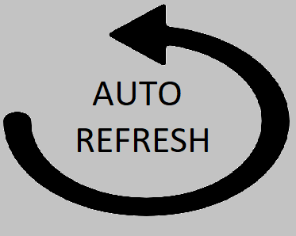

Extensao modelada para atualizar a primeira aba do navegador automaticamente.
Para alterar o intervalo de tempo, modificar a variavel "time" em app.

Necessita implementar a fun��o para anular o refresh quando o usuario inetragir com a aba.